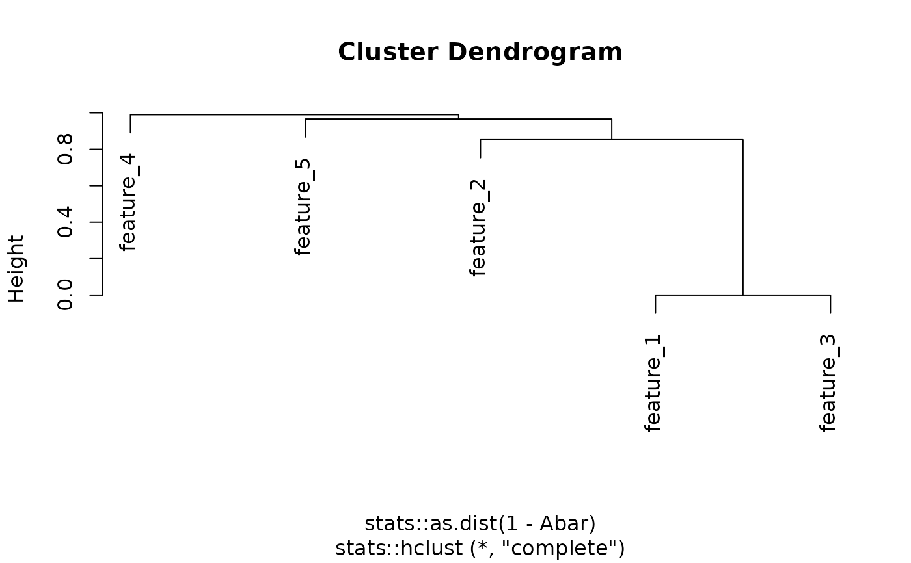

Apply hierarchical tree cutting to the similarity matrix and extract multi/single-omics network modules.
Usage
getOmicsModules(Abar, CutHeight = 1 - 0.1^10, PlotTree = TRUE)
Arguments
- Abar
A similary matrix for all features (all omics data types).
- CutHeight
Height threshold for the hierarchical tree cutting. Default
is \(1-0.1^{10}\).
- PlotTree
Logical. Whether to create a hierarchical tree plot, default is set to TRUE.
Value
A list of multi/single-omics modules.
Examples
set.seed(123)
w <- rnorm(5)
w <- w/sqrt(sum(w^2))
feature_name <- paste0('feature_', 1:5)
abar <- getAbar(w, FeatureLabel = feature_name)
modules <- getOmicsModules(abar, CutHeight = 0.5)
